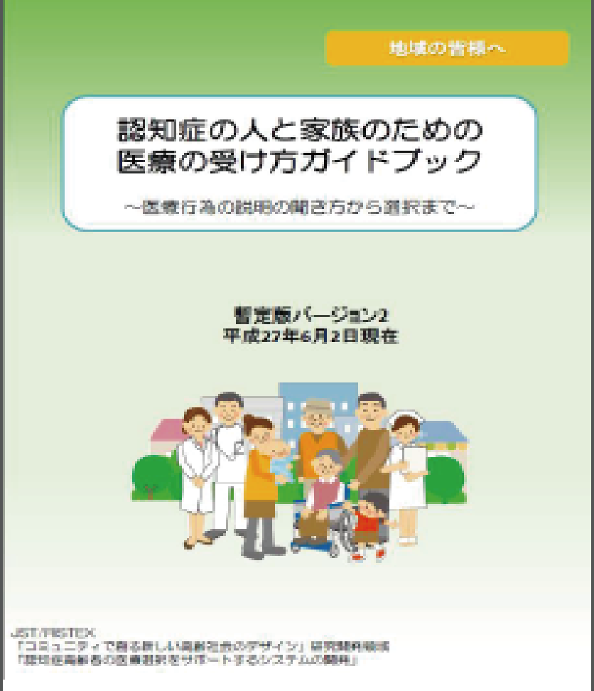

近年、高齢化が進み、認知症を発症する人や家族が認知症になることを恐れている人が増加しています。
そこで、私たちは、以下の２点を目的にこのマニュアルをアプリ化しました。
 認知症に関する知識を身につける
認知症に関する知識を身につける
→ 不安を解消すること
事前に心構えを行う
→ よりよい治療につなげること
※アプリ化を行ったマニュアルの原本は、京都府立医科大学の成本医師らが中心となって作成したものです。

マニュアルの原本を掲載しているサイト：
http://j-decs.org/